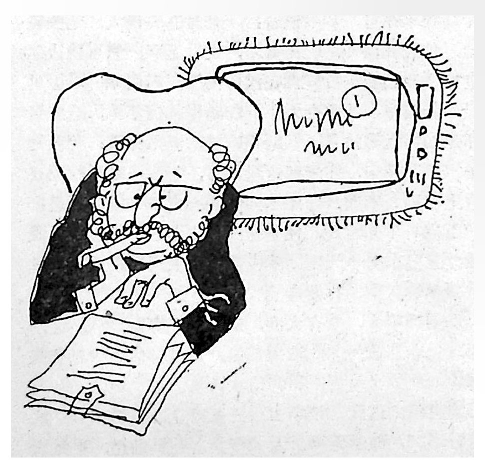

佚名 《人事》1987年第6期（总第21期），第38页
无题（《法国国有企业的管理》配图）
Untitled (drawing in “The Management of State Enterprises in France”)
- Description
- A bald, bespectacled executive chewing a cigar sits hunched in a high-backed chair over a thick sheaf of papers, while a screen behind him shows a jagged line graph.
- Note
- Printed without caption, credit or source inside an article on French state-owned enterprises. The style suggests a reprinted Western cartoon (tagged foreign on that basis), but this is an inference.
- Artist
- Unattributed 佚名
- Published in
- 《人事》1987年第6期（总第21期）, p. 38
- Themes
- Foreign cartoons · Bureaucratism

Cite
Unattributed, “无题（《法国国有企业的管理》配图）” [Untitled (drawing in “The Management of State Enterprises in France”)], Renshi (Personnel) 《人事》, 1987, no. 6, p. 38.